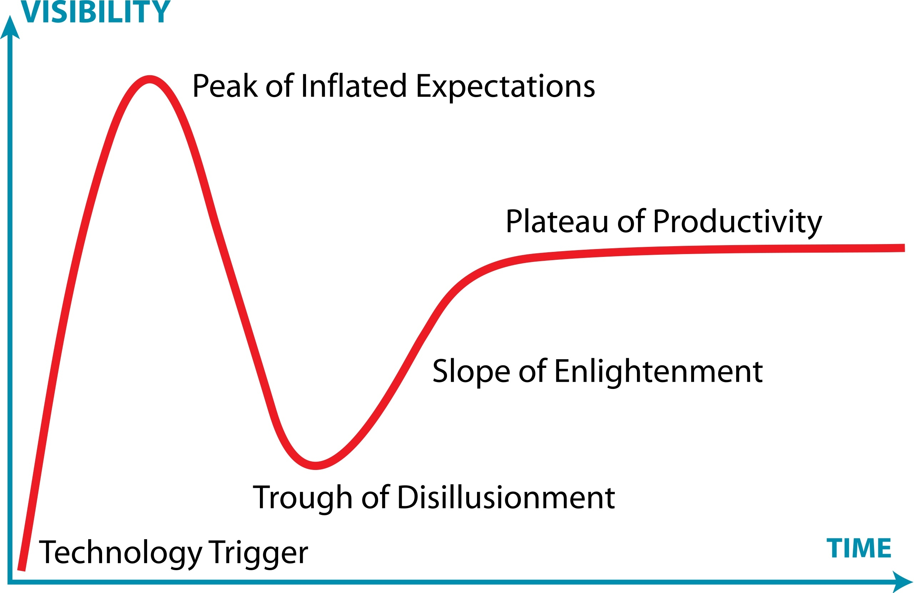
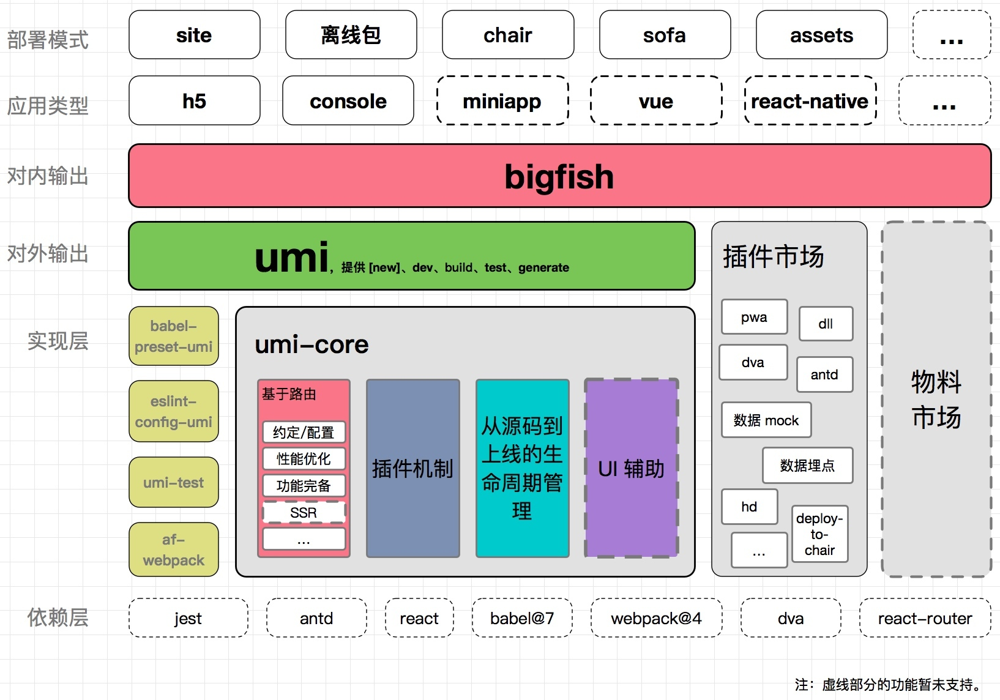
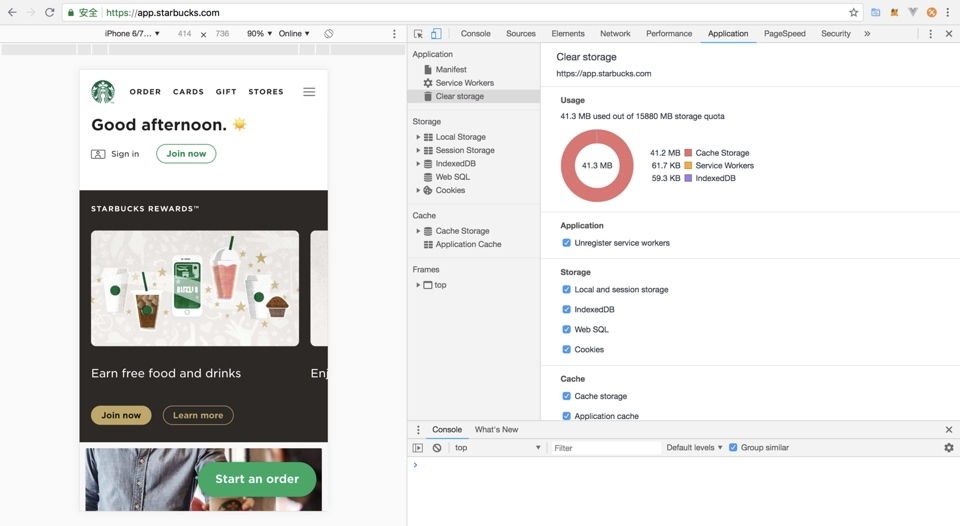
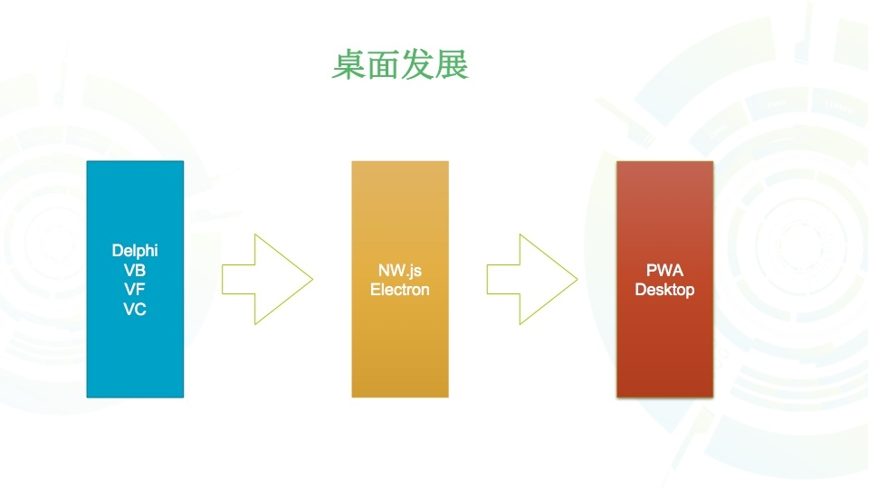
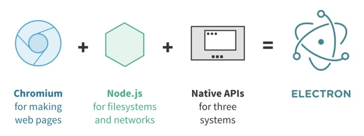
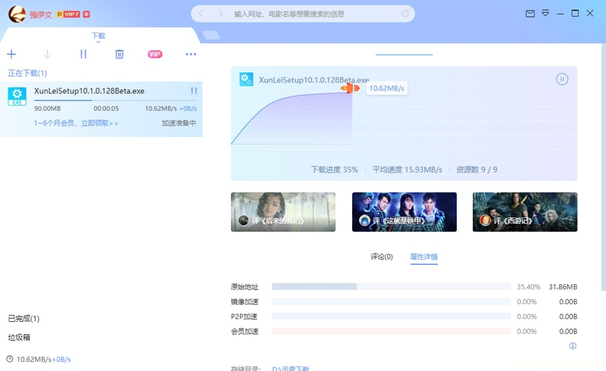
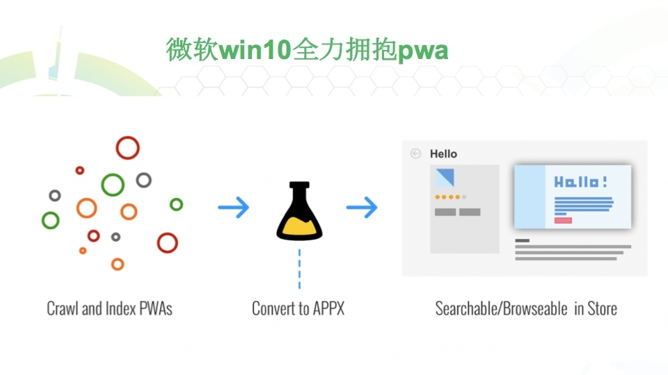
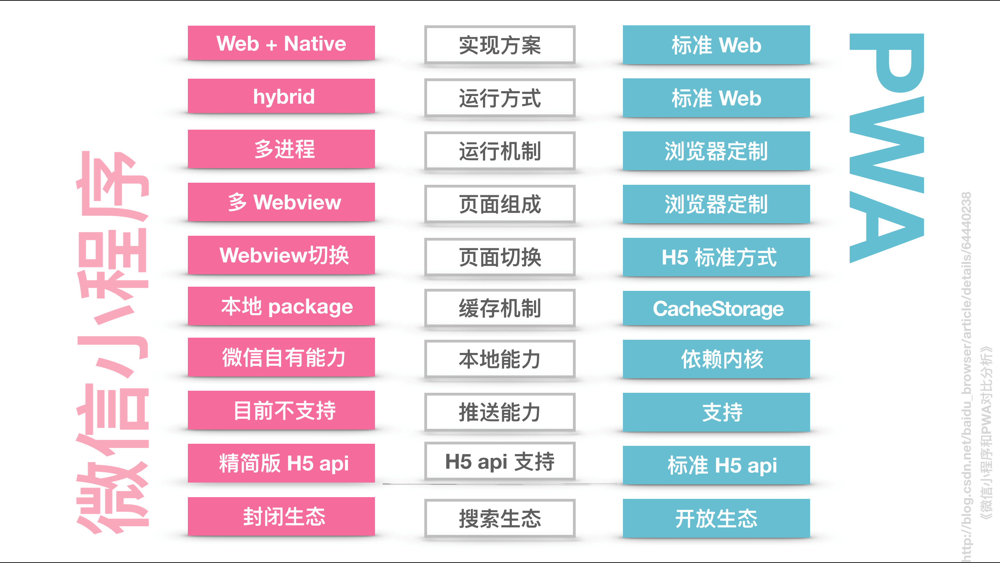
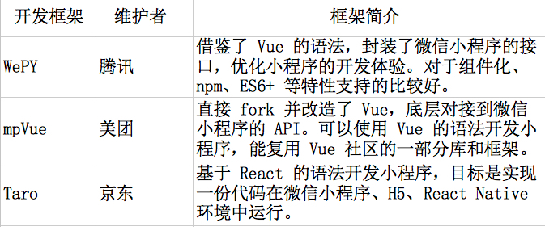

- 000 开篇词 卓越的团队，必然有一个卓越的领导者.md
- 001 你的能力模型决定你的职位.md
- 002 七位CTO纵论技术领导者核心能力.md
- 003 CEO实话实说：我需要这样的CTO.md
- 004 技术领导者不等于技术管理者.md
- 005 CTO的三重境界.md
- 006 像CEO一样思考.md
- 007 要制定技术战略，先看清局面.md
- 008 技术领导力就是成事的能力.md
- 009 CTO是商业思维和技术思维交汇的那个点.md
- 010 创业公司CTO的认知升级.md
- 011 最合适的技术才是最有价值的技术.md
- 012 谈谈CTO在商业战略中的定位.md
- 013 把脉高效执行的关键要素.md
- 014 从零开始搭建轻量级研发团队.md
- 015 定制高效研发流程.md
- 016 培养中层团队的管理认知.md
- 017 团队成长要靠技巧和体系.md
- 018 做到这四点，团队必定飞速成长.md
- 019 将企业打造成一所终身大学.md
- 020 论团队管理与共同升级.md
- 021 绩效管理的目标不仅仅是绩效考核.md
- 022 验证研发团队价值的绩效考核机制.md
- 023 产品技术团队OKR使用法则.md
- 024 996、987，程序员加班文化你怎么看？.md
- 025 建立有效的员工淘汰机制.md
- 026 让细节的病毒感染你的团队.md
- 027 如何在不同组织文化下推行技术管理.md
- 028 业务高速增长期的团队管理：知轻重、重绸缪、调缓急.md
- 029 被8成的人误解的工程师文化.md
- 030 关于工程师文化的六个问题.md
- 031 五位技术领导者的文化构建实战.md
- 032 文化是管理的那只无形之手.md
- 033 选对的人，做正确的事情.md
- 034 打好技术团队搭建的基础.md
- 035 做个合格的技术岗位面试官.md
- 036 高潜力人才的内部培养.md
- 037 技术创业该如何选择赛道.md
- 038 CTO要掌握的产品哲学：理性与人性的权衡.md
- 039 从客户价值谈技术创新.md
- 040 技术人投身创业公司之前，应当考虑些什么？.md
- 041 技术人创业前要问自己的六个问题.md
- 042 团队激励之分配好你的奖金.md
- 043 通过积分考核提升技术团队的绩效.md
- 044 空降技术高管的择业七计.md
- 045 选好人生下一站–CTO空降上篇.md
- 046 走出至暗时刻–CTO空降下篇.md
- 047 空降领导者平稳落地要做的四道题（上）.md
- 048 空降领导者平稳落地要做的四道题（下）.md
- 049 打造高效的研发组织架构：高效研发流程那些事（一）.md
- 050 你的研发流程符合你的组织架构吗？谈高效研发流程那些事（二）.md
- 051 聊聊研发流程管理中的那些坑：高效研发流程那些事（三）.md
- 052 数据如何驱动研发高效运转？谈高效研发流程那些事（四）.md
- 053 如何打造高效且敏捷的组织文化？谈高效研发流程那些亊（五）.md
- 054 打造高速运转的迭代机器：现代研发流程体系打造（一）.md
- 055 用机器打造迭代机器：现代研发流程体系打造（二）.md
- 056 有了敏捷开发，那交付期限去哪儿了？.md
- 057 敏捷中的期限之殇，软件业该怎么做？.md
- 058 如何打造个人技术品牌？.md
- 059 技术演，有章可循.md
- 060 正确对待技术演中的失误.md
- 061 刘俊强：技术最高决策者应该关注技术细节吗 .md
- 062 张溪梦：技术领袖需要具备的商业价值思维.md
- 063 未来组织形态带来的领导力挑战.md
- 064 如何判断业务价值的高低.md
- 065 如何打造高效的分布式团队？.md
- 066 如何打造有活力、持续创新的研发团队？.md
- 067 如何打造独属自己的工程师文化？.md
- 068 如何打造一个自组织团队？.md
- 069 茹炳晟：QE团队向工程效能团队转型的实践之路.md
- 070 技术、产品、管理的不同视角.md
- 071 什么样的人适合考虑管理角色.md
- 072 创业公司如何招到合适的人才.md
- 073 用数据来分析管理员工.md
- 074 为什么给了高工资，依然留不住核心员工？.md
- 075 刘俊强：一本正经教你如何毁掉一场技术演.md
- 076 内部技术会议的价值.md
- 079 程军：从0到1打造高效技术团队的方法论.md
- 080 技术Leader的持续成长.md
- 081 游舒帆：一流团队必备的商业思维能力.md
- 082 游舒帆：数据力，透过数据掌握公司经营大小事.md
- 083 游舒帆：运营力，让用户出现你期待的行为.md
- 084 游舒帆：策略力，让目标与行动具备高度一致性.md
- 085 游舒帆：敏捷力，拥抱不确定性，与VUCA共舞.md
- 086 刘俊强：管理者必备的高效会议指南（上）.md
- 087 刘俊强：管理者必备的高效会议指南（下）.md
- 088 刘俊强：做好一对一沟通的关键要素（上）.md
- 089 刘俊强：做好一对一沟通的关键要素（下）.md
- 090 程军：打造高效技术团队之招人.md
- 091 程军：打造高效技术团队之做事.md
- 092 成敏：技术负责人如何做优先级决策.md
- 093 兰军：团队研发效率低下的要因分析.md
- 094 兰军：提升产品团队研发效率的实践（上）.md
- 095 兰军：提升产品团队研发效率的实践（下）.md
- 096 阿禅：工程师转型产品经理可能踩到的坑.md
- 097 阿禅：工程师转型产品经理的必备思维.md
- 098 徐裕键：业务高速增长过程中的团队迭代.md
- 099 徐裕键：业务高速增长过程中的技术演进.md
- 100 徐裕键：团队文化建设，保持创业公司的战斗力.md
- 101 刘俊强：领导力提升指南之培养积极的态度.md
- 102 姚从磊：巧用AARRR模型，吸引优秀技术人才（一）.md
- 103 姚从磊：巧用AARRR模型，吸引优秀技术人才（二）.md
- 104 姚从磊：巧用 AARRR 模型，吸引优秀技术人才（三）.md
- 105 姚从磊：巧用 AARRR 模型，吸引优秀技术人才（四）.md
- 106 程军：技术人的「知行合一」（一）.md
- 107 刘俊强：消除压力的七种方法.md
- 108 谢呈：技术高手转身创业的坑和坡.md
- 109 谢呈：关于垂直互联网创业的一些经验之谈.md
- 110 成敏：创业公司为什么会技术文化产品缺失.md
- 111 蔡锐涛：从0到1再到100，创业不同阶段的技术管理思考.md
- 112 刘俊强：必知绩效管理知识之绩效管理循环.md
- 113 程军：技术人的「知行合一」（二）.md
- 114 成敏：谈谈不同阶段技术公司的特点.md
- 115 成敏：打造优秀团队与文化的三个推手.md
- 116 刘俊强：必知绩效管理知识之绩效目标的制定.md
- 117 程军：技术人的「知行合一」（三）.md
- 118 吴铭：成本评估是技术leader的关键素质.md
- 119 汤力嘉：CTO如何进行产品决策（一）.md
- 120 刘俊强：必知绩效管理知识之绩效数据收集（上）.md
- 121 刘俊强：必知绩效管理知识之绩效数据收集（下）.md
- 122 黄伟坚：创业中那些永远回避不了的问题.md
- 123 黄伟坚：用系统性思维看待创业.md
- 124 刘俊强：必知绩效管理知识之评定绩效.md
- 125 洪强宁：从程序员到架构师，从架构师到CTO（一）.md
- 126 洪强宁：从程序员到架构师，从架构师到CTO（二）.md
- 127 刘俊强：必知绩效管理知识之绩效沟通（一）.md
- 128 王坚：年轻人永远是创新的主体.md
- 129 刘俊强：必知绩效管理知识之绩效沟通（二）.md
- 130 刘俊强：必知绩效管理知识之绩效沟通（三）.md
- 131 汤力嘉：CTO如何在产品方面进行决策（二）.md
- 132 徐函秋：转型技术管理者初期的三大挑战（一）.md
- 133 徐函秋：转型技术管理者初期的三大挑战（二）.md
- 134 刘建国：我各方面做得都很好，就是做不好向上沟通.md
- 135 钮博彦：软件研发度量体系建设（一）.md
- 136 钮博彦：软件研发度量体系建设（二）.md
- 137 成敏：创业者不要成为自己公司产品技术文化的破坏者.md
- 138 于艺：以生存为核心，B端产品的定位心法.md
- 139 成敏：创业者应该具备的认知与思维方式.md
- 140 袁店明：创业产品必须迈过的鸿沟.md
- 141 徐毅：五星级软件工程师的高效秘诀（一）.md
- 142 徐毅：五星级软件工程师的高效秘诀（二）.md
- 143 徐毅：技术Leader应该具备的能力或素质.md
- 144 于艺：如何提升自己的能力与动力.md
- 145 李列为：技术人员的商业思维.md
- 146 刘天胜：打造高效团队，关键在于平衡人、事和时间（一）.md
- 147 刘天胜：打造高效团队，关键在于平衡人、事和时间（二）.md
- 148 肖德时：创业团队技术领导者必备的十个领导力技能（上）.md
- 149 肖德时：创业团队技术领导者必备的十个领导力技能（下）.md
- 150 暨家愉：技术人如何快乐的自我成长（上）.md
- 151 暨家愉：技术人如何快乐的自我成长（下）.md
- 152 施翔：如何打造7 24高效交付通道（上）.md
- 153 施翔：如何打造7 24高效交付通道（下）.md
- 154 谢东升：说说技术管理者从外企到民企的挑战.md
- 155 王可光：如何搭建初创团队之人才关.md
- 156 成敏：技术人转型管理的两大秘诀.md
- 157 成敏：技术人才的管理公式.md
- 158 胡峰：人到中年：失业与恐惧.md
- 159 黄云：技术管理者如何科学的做好向上管理.md
- 160 胡键：创业公司需要高凝聚力高绩效的技术团队.md
- 161 卢亿雷：企业发展的不同阶段，该如何打造高效的研发流程体系.md
- 162 王海亮：提升技术团队效率的5个提示（上）.md
- 163 王海亮：提升技术团队效率的5个提示（下）.md
- 164 陈崇磐：心理成熟度 - 创业公司识人利器.md
- 165 陈崇磐：管事与管人 - 如何避开创业公司组队陷阱.md
- 166 俞圆圆：合格CTO应该做好的5件事（上）.md
- 167 俞圆圆：合格CTO应该做好的5件事（下）.md
- 168 余加林：从技术人到创业合伙人必备的三个维度的改变.md
- 169 高琦：如何给研发打绩效不头疼而又公正？（上）.md
- 170 高琦：如何给研发打绩效不头疼而又公正？（下）.md
- 171 邱良军：如何有效地找到你心仪的人才.md
- 172 于人：研发团队人均产能3年提升3.6倍的秘诀（上）.md
- 173 于人：研发团队人均产能3年提升3.6倍的秘诀（下）.md
- 174 邱良军：打造高效技术团队，你准备好了吗！.md
- 175 邱良军：打造高效技术团队的人才招聘攻略.md
- 176 胡键：创业公司如何打造高凝聚力高绩效的技术团队：组织篇.md
- 177 胡键：创业公司如何打造高凝聚力高绩效的技术团队：工具篇.md
- 178 马连浩：用人的关键在于用人所长，而非改人之短.md
- 179 张矗：技术管理者必经的几个思维转变.md
- 180 钟忻：成为温格-聊聊如何当好CTO.md
- 181 姚威：技术团队管理中关于公平的五个核心准则.md
- 182 谢文杰：区块链的下一个十年.md
- 183 薛文植：技术管理的本质-要做尊重人性的管理.md
- 184 狼叔：2019年前端和Node的未来-大前端篇（上）.md
- 185 狼叔：2019年前端和Node的未来-大前端篇（下）.md
- 186 赵晓光：如何培养团队竞争力（上）.md
- 187 赵晓光：如何培养团队竞争力（下）.md
- 188 张嵩：从心理学角度看待小中型团队的管理.md
- 189 狼叔：2019年前端和Node的未来-Node.js篇（上）.md
- 190 狼叔：2019年前端和Node的未来-Node.js篇（下）.md
- 191 肖冰：如何建立高信任度的团队.md
- 192 崔俊涛：如何做好技术团队的激励（上）.md
- 193 崔俊涛：如何做好技术团队的激励（下）.md
- 194 刘俊强：2019年云计算趋势对技术人员的影响.md
- 195 吴晖：企业B2B服务打磨的秘诀-ESI.md
- 196 邱良军：关于做好技术团队管理的几点思考.md
- 197 邱良军：做好研发管理的3个关键.md
- 198 徐林：通过快速反馈建立充满信任的技术团队.md
- 199 宝玉：怎样平衡软件质量与时间成本范围的关系？.md
- 200 邱良军：沟通，沟通，还是沟通（上）.md
- 201 邱良军：沟通，沟通，还是沟通（下）.md
- 202 陈嘉佳：奈飞文化宣言（上）.md
- 203 陈嘉佳：奈飞文化宣言（下）.md
- 204 邱良军：从小处着眼，修炼文化价值观.md
- 205 邵浩：人工智能新技术如何快速发现及落地（上）.md
- 206 邵浩：人工智能新技术如何快速发现及落地（下）.md
- 207 许良：科创板来了，我该怎么办？.md
- 208 陈阳：科创板投资，未来哪些行业受益最大？.md
- 大咖对话 万玉权：如何招到并培养核心人才.md
- 大咖对话 万玉权：高效团队的关键，以目标为导向，用数据来说话.md
- 大咖对话 不可替代的Java：生态与程序员是两道护城河.md
- 大咖对话 从几个工程师到2000多个工程师的技术团队成长秘诀.md
- 大咖对话 以产生价值判断工程师贡献–读者留言精选.md
- 大咖对话 余沛：打造以最佳交付实践为目标的技术导向.md
- 大咖对话 余沛：进阶CTO必备的素质与能力.md
- 大咖对话 刘俊强：云计算时代技术管理者的应对之道.md
- 大咖对话 刘俊强：谈谈我对2019年云计算趋势的看法.md
- 大咖对话 创业就是把自己过去的经验快速的产品化.md
- 大咖对话 如何打造自我驱动型的技术团队？.md
- 大咖对话 如何高效管理8000多规模的技术团队.md
- 大咖对话 季昕华：以不变的目的应对多变的技术浪潮.md
- 大咖对话 对人才的长期投资是人才体系打造的根本.md
- 大咖对话 张建锋：创业可以快而大，也可以小而美.md
- 大咖对话 彭跃辉：保持高效迭代的团队是如何炼成的.md
- 大咖对话 彭跃辉：解决用户痛点就是立足于市场的秘诀.md
- 大咖对话 徐毅：如何提升员工的活力与动力？.md
- 大咖对话 徐毅：打造高效研发团队的五个维度及相关实践.md
- 大咖对话 技术人创业前衡量自我的3P3C模型.md
- 大咖对话 技术人真正需要的是升维思考.md
- 大咖对话 技术管理者应该向优秀的体育教练学习.md
- 大咖对话 未来技术负责人与首席增长官将如何协作？.md
- 大咖对话 李昊：创业公司如何做好技术团队绩效考核？.md
- 大咖对话 李智慧：技术人如何应对互联网寒冬.md
- 大咖对话 杨育斌：技术领导者要打造技术团队的最大化价值.md
- 大咖对话 池建强：做产品不要执着于打造爆款.md
- 大咖对话 焦烈焱：从四个维度更好的激发团队创造力.md
- 大咖对话 玉攻：四个维度看小程序与App的区别.md
- 大咖对话 王坚：我从不吃后悔药.md
- 大咖对话 王平：从人、事、价值观、文化等维度看技术团队转型.md
- 大咖对话 王平：如何快速搭建核心技术团队.md
- 大咖对话 王鹏云：技术人创业该如何选择合伙人？.md
- 大咖对话 王鹏云：管理方式的差异是为了更好地实现企业商业价值.md
- 大咖对话 王龙：利用 C 端连接 B 端实现产业互联网是下半场的重中之重.md
- 大咖对话 童剑：用合伙人管理结构打造完美团队.md
- 大咖对话 管理者是首席铲屎官？.md
- 大咖对话 胡哲人：技术人创业要跨过的思维坎.md
- 大咖对话 袁店明：如何将打造自组织团队落诸实践.md
- 大咖对话 袁店明：打造高效研发团队的五个要点.md
- 大咖对话 让团队成员持续的enjoy.md
- 大咖对话 谢孟军：技术人如何建立自己的个人品牌.md
- 大咖对话 谭待：架构的本质是折中.md
- 大咖对话 陈天石：AI 芯片需要技术和资本的双重密集支撑.md
- 大咖对话 陈斌：如何打造高创造力、高动力的技术团队.md
- 大咖对话 陶真：技术人要爱上问问题，而不是自己的解决方案.md
- 大咖对话 韩军：CTO转型CEO如何转变思路.md
- 大咖对话 项目成功的秘诀–技术产品双头负责制.md
- 大咖对话 顾旻曼：投资时我们更多地是在找优秀的团队.md
- 大咖对话 高斌：过分渲染会过度拉高大众对人工智能的期望.md
- 大咖问答 发现下一个小米，不是只能靠运气.md
- 大咖问答 打造自己的个人品牌，你也可以.md
- 新春特辑1 卓越CTO必备的能力与素质.md
- 新春特辑2 如何成长为优秀的技术管理者？.md
- 新春特辑3 如何打造高质效的技术团队？.md
- 新春特辑4 如何打造高效的研发流程与文化？.md
- 新春特辑5 如何做好人才的选育用留？.md
- 温故而知新 一键直达，六大文章主题索引.md
- 结束篇 即使远隔千山万水，也要乘风与你同往.md
184 狼叔：2019年前端和Node的未来-大前端篇（上）
你好，我是阿里巴巴前端技术专家狼叔，今天想跟你分享2019年我对前端和Node现状及未来发展趋势的理解。
我其实特别反感很多人说“前端娱乐圈”这种话，诚然，爆发式增长必然会带来焦点，但也不必过度解读，2018年的几件大事儿我都了解，真的不是大家看到的那样的。学会辩证的看问题，用心去体味背后的趋势，我想这比所谓的“正直”更有价值，我更希望大家能够坚持学习，保持思辨和平和。
大前端
2018年的事儿特别多，从React v16普及，到jQuery被GitHub下掉完成阶段性历史使命，在唏嘘之外，版本帝Angular又发布了v6和v7两个版本。这些其实都不算啥大新闻，反观三大框架，写法越来越像，越来越贴近WebComponents标准，而周边应用层面的封装已经开始指数级增长。小程序是今年最火的技术，接连出现，快应用也想分一杯羹。PWA进入稳定期，尤其是PWA桌面版，可以让我们更好的看清楚PC桌面版开发的全貌。移动端还是以强运营为主，各大公司都开始不再all in移动，开始重视多端并进，到了开始拼细节的阶段了。TypeScript全面开花，GraphQL蠢蠢欲动，WebAssembly更是打开了浏览器上多语言的大门。所有的这一切都在暗示，浏览器即操作系统，你能想象到未来前端的样子么？下面跟着我一一进行解读吧。
三大框架标准化
有朋友吐槽：“Vue的特点就是上手快，初期相当好用，但如果接手一个别人写的 Vue 项目，再和 React 对比一下，你会感谢 React 的”。但当Vue 3.0发布之后，估计他就不会这样说了。因为Vue 3的Class API 和 React 的写法几乎是一模一样的，这个改动不是 Proxy 和 TypeScript，而是支持原生 Class 的写法。你用 Class 来写，那代码和 React 写法几乎是一模一样的！
import Vue from 'vue'
class App extends Vue.Component {
count = 0
up() {
this.count++
}
down() {
this.count--
}
render() {
return (
<div>
<h1>{this.count}</h1>
<button onClick={() => this.up()}>+</button>
<button onClick={() => this.down()}>-</button>
</div>
)
}
}
Vue.render(<App />, document.body as HTMLElement)
从上面的讨论可以看出，前端三大框架已经趋于平稳化、标准化，在我看来未来是WebComponents的。
WebComponents是规范，最早最知名的一个是 Google 主推的JavaScript 库Polymer，它可帮助我们创建自定义的可重用 HTML 元素，并使用它们来构建高性能、可维护的 App。在 I/O 大会上，Google 推出了 Polymer 3.0，Polymer 3.0 致力于将 Web 组件的生态系统从 HUML Imports 转移到 ES Modules，包管理系统将支持 npm，这使你更容易将基于 Polymer 的 Web 组件和你喜欢的工具、框架协同使用。
<script src="node_modules/@webcomponents/webcomponents-loader.js"></script>
<script type="module">
import {PolymerElement, html} from '@polymer/polymer';
class MyElement extends PolymerElement {
static get properties() { return { mood: String }}
static get template() {
return html`
<style> .mood { color: green; } </style>
Web Components are <span class="mood">[[mood]]</span>!
`;
}
}
customElements.define('my-element', MyElement);
</script>
<my-element mood="happy"></my-element>
另外还有2个项目具有一定的参考价值：
1.Rax也提供了一个名为atag的UI WebComponents库。 2.LitElement是一个简单的轻量级的快速创建WebComponents的基类，可以理解成是Polymer最小的实现版本。
LitElement主要的特性包括WebComponent生命周期模型支持和单向的数据绑定模型。它遵守 WebComponents 标准，使用lit-html模块这个快速的HTML渲染引擎定义和渲染HTML模板。最重要的是它对浏览器兼容性非常好，对主流浏览器都能有非常好的支持。由于LitHtml基于tagged template，结合ES6中的template，使得它无需预编译、预处理，就能获得浏览器原生支持，并且扩展能力更强，性能更好。
import { LitElement, html } from '@polymer/lit-element';
// Create your custom component
class CustomGreeting extends LitElement {
// Declare properties
static get properties() {
return {
name: { type: String }
};
}
// Initialize properties
constructor() {
super();
this.name = 'World';
}
// Define a template
render() {
return html`<p>Hello, ${this.name}!</p>`;
}
}
// Register the element with the browser
customElements.define('custom-greeting', CustomGreeting);
是不是看着更眼熟了？
《三国演义》里有这样一句：“话说天下大势，分久必合，合久必分。周末七国分争，并入于秦。及秦灭之后，楚、汉分争，又并入于汉。汉朝自高祖斩白蛇而起义，一统天下，后来光武中兴，传至献帝，遂分为三国。”
前端从2014年到2017年是混战期，得益于Node.js的辅助加成，外加各种前端优秀的创意和实践，使得React/Vue/Angular三足鼎立。无论React发布v16，增加Fiber和Hooks，还是Vue 3.0发布，其实最终都是朝着W3C WebComponents标准走。一言以蔽之，Follow标准是趋势，如果能够引领标准，那将是框架的无上荣耀。
我们可以参考一下技术成熟度曲线（Hype Cycle -Wikipedia），这个曲线把技术发展分成五个步骤：【科技诞生的促动期】->【过高期望的峰值】-> 【泡沫化的底谷期】 -> 【稳步爬升的光明期】 -> 【实质生产的高原期】。从前端现在的热度来看，应该是处于从第三阶段【泡沫化的底谷期】到第四阶段【稳步爬升的光明期】的爬坡过程，创新不会那么多，更多的是偏于应用层的内容。

对于当下的前端发展情况，我其实是有隐忧的。当年Java世界曾经搞各种GUI，创造了MVC模式，结果没火，没想到到了Web开发领域，MVC成了基本约定。之后Model 1和Model 2等企业开发模型渐渐成熟，出现了Struts、Spring、Hibernate三大框架。在之后很长的一段时间里，Java程序员都是言必称“SSH”。再之后Spring一家独大，一统江湖，恐怕今天还记得 EJB 的人已经不多了。框架一旦稳定，就会有大量培训跟进，导致规模化开发。这是把双刃剑，能满足企业开发和招人的问题，但也给创新探索领域上了枷锁。
应用层封装进入爆发期
框架和工程化基本探索稳定后，大家就开始思考如何更好的用，更简单的用。目前，各家大厂都在前端技术栈思考如何选型和降低成本，统一技术栈。
举个例子Umi，如下图所示。
Umi 就是一套零配置（约定高于配制），按最佳实践进行开发的，开箱即用的前端框架: React 全家桶 + dva + jest + antd (mobile) + less + eslint。

从上图中可以看出，Umi已经思考的相对全面，从技术选型、构建到多端输出、性能优化、发布等方面进行了拆分，使得Umi的边界更为清晰，是前端最佳实践，目前大多数前端组都是类似的实现方式。说白了，Umi和 create-react-app（cra）类似，就是现有技术栈的组合，封装细节，让开发者用起来更简单，只写业务代码就可以了。
- 零配置就是默认选型都给你做好了。
- 开箱即用就是技术栈都固化了。
- 约定大于配置，开发模式也固化好了。
Umi的核心是 af-webpack模块，它封装了Webpack和各种插件，把 webpack-dev-server 等Node.js模块直接打包进去，同时对配置做了更好的处理以及插件化。af-webpack核心是webpack-chain模块，通过链式写法来修改Webpack配置，使得af-webpack极为灵活。其实以React全家桶为例，开发者最大的负担就是Webpack工程化构建。关于 Webpack 的封装实践有很多，比如知名的还有YKit、EasyWebpack等。
- YKit 是去哪儿开源的Webpack，内置 Connect 作为Web server，结合dev和hot中间件，对于多项目构建提效明显，对版本文件发布有不错的实践。
- EasyWebpack 也是插件化，但对解决方案、boilerplate 等做了非常多的集成，比如Egg的SSR是有深入思考的，尽管不赞同这种做法。
另外，在 create-react-app（cra）项目里使用的是 react-scripts 作为启动脚本，它和 egg-scripts 类似，也是通过约定，隐藏具体实现细节，让开发者不需要关注构建。在未来，类似的封装还会有更多的封装，并且更偏于应用层面。
PWA进入稳定期
PWA和native app（移动应用）的核心区别在于以下几点：
1.安装：PWA是一个不需要下载安装即可使用的应用。 2.缓存使用：native app主要是对sqlite缓存，以及文件读写操作，而PWA对缓存数据库操作支持的非常好，足以应对各种场景。 3.基本能力补齐，比如推送。
现在PWA已经支持的很好了，唯一麻烦的是缓存策略和发版比较麻烦，应用轻量化的趋势已经很明朗了。下面讲一下PWA的一些关键点。
1.通用本地存储的解决方案Workbox
Workbox 是 GoogleChrome 团队推出的一套 Web App 静态资源和请求结果本地存储的解决方案，该解决方案包含一些 JS 库和构建工具，Workbox 背后则是 Service Worker 和 Cache API 等技术和标准在驱动。在 Workbox 之前，GoogleChrome 团队较早时间推出过 sw-precache 和 sw-toolbox 库，但骂声很多，直到 Workbox 才真正诞生了能方便统一的处理离线能力的更完美的方案。
Workbox 现在已经发布到了 3.0 版本，不管你的站点是用何种方式构建的，它都可以为你的站点提供离线访问能力，几乎不用考虑太多的具体实现，只用做一些配置就可以。就算你不考虑离线能力，它也能让你的站点访问速度更快。

比如星巴克的PWA应用，对缓存的应用高达41.3mb。这是浏览器端非常大的突破，尽管没啥新技术。
2.PWA桌面版
纵观PC桌面端的发展过程，早期Delphi/VB/VF/VC等构建起的c/s时代，即使到今天依然有很大的量。最近两年，随着Atom/VSCode的火爆，带动了node webkit相关模块的爆发，比如NW.js和Electron等。通过Web技术来构建pc client，确实是省时省力，用户体验也非常好，比如钉钉客户端、石墨文档客户端等，最主要的是可以统一技术栈，比如某些算法，用JS写一次，之后可以到前端、node、pc client等多处复用。当然更好的是使用Web技术进行开发，不需要加壳打包，PWA桌面版就是这样的技术。
接下来就具体聊一下桌面端的3个发展阶段。

第一阶段：原生开发Native
早年的VB/VF/VC/Delphi等原生开发方式，到后来出现QT类的跨平台软件，但依然可以理解成是原生开发。
第二阶段：混搭开发Hybrid
谷歌于2008年9月2日首次发布了Chrome浏览器，Node.js是Ryan Dahl于2009年发布的，他把V8引擎（Chrome核心JavaScript引擎）搬到了后端，使用js编写服务器程序变为现实。随后 npm 发展极为迅猛，跨平台技术也突飞猛进，出现了NW.js这样的轻量级跨平台框架，基于Chromium（Chrome开源版本） + Node.js，使得PC桌面端能够通过Web开发技术开发，最终打包编译成各个平台支持的应用格式，给PC桌面开发带来了太多的可能性。
而Atom 是 GitHub 在 2014 年发布的一款基于 Web 技术构建的文本编辑器，其中atom-shell，也就是后来的 Electron，是和NW.js类似的技术。它允许使用Node.js（作为后端）和Chromium（作为前端）来完成桌面GUI应用程序的开发。Chromium 提供了渲染页面和响应用户交互的能力，而 Node.js 提供了访问本地文件系统和网络的能力，也可以使用 NPM 上的几十万个第三方包。在此基础之上，Electron 还提供了 Mac、Windows、Linux 三个平台上的一些原生 API，例如全局快捷键、文件选择框、托盘图标和通知、剪贴板、菜单栏等。

Erich Gamma老爷子设计的 Monaco／VS Code，同样基于Electron，但性能比Atom强多了。VS Code 会先启动一个后台进程，也就是 Electron 的主进程，它负责编辑器的生命周期管理、进程间通讯、UI插件管理、升级和配置管理等。后台进程会启动一个（或多个）渲染进程，用于展示编辑器窗口，它负责编辑器的整个 UI 部分，包括组件、主题、布局管理等等。每个编辑器窗口都会启动一个 Node.JS 子进程作为插件的宿主进程，在独立进程里跑插件逻辑，然后通过事件或者回调的方式通知 Renderer 结果，避免了 Renderer 的渲染被插件中 JS 逻辑阻塞。
演进过程：chrome > Node.js > nw.js > atom(electron) > vs code
在第二阶段里，我们可以看到PC桌面端以 Web 开发技术作为核心，以浏览器内核作为跨平台核心，最终将 Web 开发的代码和浏览器内核打包。这样做的好处是前端开发相对简单，相对于 C++ 等语言更为方便，另外从成本上考虑，也是极为划算的。
如今，很多应用都开始基于Electron构建，比如微信小程序ide、微信pc版本等，另外非常令人激动的是，2018年10月18日，迅雷论坛发文称新版（从迅雷X 10.1版本开始）采用Electron软件框架完全重写了迅雷主界面。使用新框架的迅雷X可以完美支持2K、4K等高清显示屏，界面中的文字渲染也更加清晰锐利。从技术层面来说，新框架的界面绘制、事件处理等方面比老框架更加灵活高效，因此界面的流畅度也显著优于老框架的迅雷。

第三阶段：PWA桌面版
王国维在《人间词话》中提出“隔与不隔”这一文学命题，这个问题在开发领域也是存在的。明明是Web开发的，为什么还要打包加壳呢？除了体积非常大以外，使用安装也极为麻烦。
Spotify的PWA桌面版应用体验是非常好的，在mac上丝般顺滑。
2018年Google IO大会上，微软宣布win10全力拥抱PWA，通过爬虫爬取PWA页面，并将其转换为Appx，继而在其应用商店里提供应用，体验和原生Native应用非常相近，对此我非常看好。

浏览器有着超强的缓存能力，外加PWA其他功能，使得浏览器上的PWA应用能够取得媲美 Native 应用的性能。在浏览器里可以直接打开，无需加壳，很明显这是极为方便的。
PWA 必然会改变前端与移动端之间的格局，再加之 AOT(ahead-of-time) 与 WebAssembly 为 JS 带来的性能上的突破，JavaScript 将撼动所有领域，从移动端（PWA）到桌面应用、物联网、VR、AR、游戏乃至人工智能等等。
Google接下来会大力推进PWA的桌面版，再加上win10和Chrome加持，Web应用无需加壳就能达到近乎原生的体验，前端的领域再一次被拓宽，未来真的可以大胆的想想。
很多人问PWA在国内为什么感觉不火，原因很简单，PWA在弱网环境下表现极好，但中国的网络是全球最好的，所以PWA其实没有给我们带来那么大的收益。不过当做一个补位方案也挺好的，毕竟2G/3G还有点量，另外在服务器渲染SSR上，PWA也能够起到很好的效果。
小程序火爆
如果说和PWA比较像的，大概就是小程序了，小程序也可以说是今年最火的技术。

微信小程序的下一步计划，支持NPM、小程序云、可视化编程、支持分包等，听起来很美好，但坑依然不少。小程序原生提供的 DSL 不够好用，所以就有了上层开发框架或者脚手架来优化开发效率，目前比较主流的有3个：

今年还冒出了微信小程序之外的头条小程序、支付宝小程序、百度智能小程序等，未来还会有很多。同时，手机厂商大概是看到了小程序对其应用商店的威胁，小米、华为、OPPO、vivo 等九大国内手机厂商联手成立了“快应用联盟”，基于react-native技术栈，整体也很不错，尤其是天猫调用菜鸟裹裹的快应用，安卓下有非常好的体验。相较而言，微信是基于 Webview 的，而快应用使用的是原生渲染方案，其他家也大抵如此。
其实5G时代很快就到了，大家可以畅想一下，在网速、内存和CPU更高的情况下，5G每秒最高下载速度高达1.4G，秒下PWA或小程序应用，到底是离线，还是在线，犹未可知吧。
前端能讲的东西实在太多了，但受限于篇幅，本文只能先简单跟你分享React/Vue/Angular三大框架标准化、应用层封装进入爆发期、PWA进入稳定期、小程序火爆等方面的内容。下一篇文章中，我将继续跟你聊聊移动端局面、多端拉齐的必然性等内容，以及2019年不可忽视的TypeScript和WebAssembly这两大技术，欢迎继续关注，也欢迎留言与我多多交流。
作者简介
狼叔（网名i5ting），现为阿里巴巴前端技术专家，Node.js 技术布道者，Node全栈公众号运营者。曾就职于去哪儿、新浪、网秦，做过前端、后端、数据分析，是一名全栈技术的实践者，目前主要关注技术架构和团队梯队建设方向。即将出版《狼书》3卷。
© 2019 - 2023 Liangliang Lee. Powered by gin and hexo-theme-book.